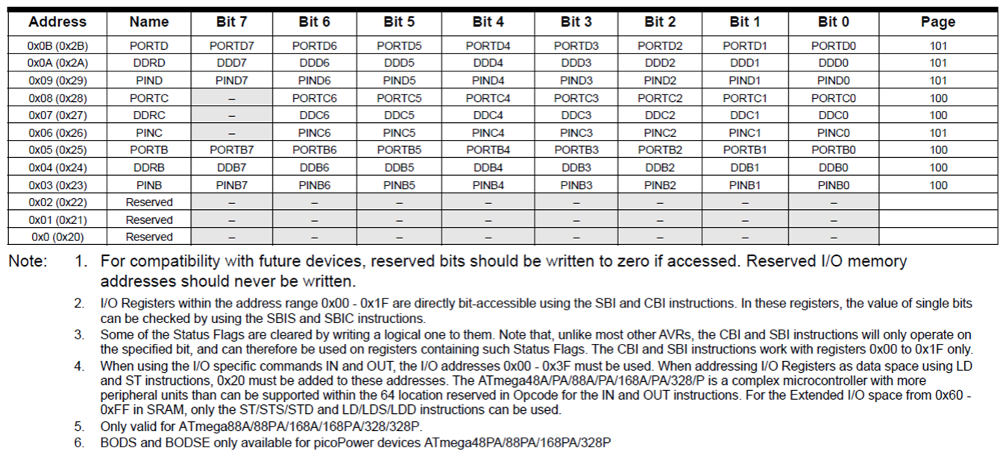
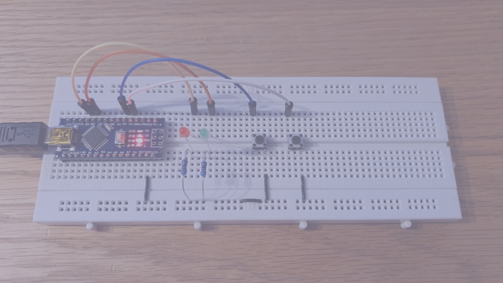

6 Interfacing to digital I/O with C
Presentation version of these notes.

Introduction
In this lecture we will be looking at two different approaches to reading and writing to ports on a microcontroller.
- The first approach discussed is using library files and predefined functions to control I/O ports as is conventionally done with the Arduino IDE.
- The second approach will look at accessing I/O bits directly using bit masks to select the desired pins.
Lecture topics
We begin by looking at digital inputs and outputs before moving onto to show a detailed example program implemented on the Atmel ATmega328 microcontroller.

6.1 How does I/O work using the Arduino IDE

Image source: This Photo by Unknown Author is licensed under CC BY-NC
6.1.1 Digital Control
Imagine a circuit with LEDs connected to D8 and D9 of the Atmel ATmega328 microcontroller.
Both LEDs will be wired to PORTD. How can the LED at D9 be switched on without changing the state of the LED at D8?
The answer is to use the pin functions provided by the Arduino library. These functions allow programmers to gain direct access to particular pins
Using the Arduino IDE, the programmer would first define the pin as an output and then use the digitalWrite function to write HIGH (integer 0x1) or LOW (integer 0x0) to the pin as required.
void setup() {
// put your setup code here, to run once:
pinMode(9, OUTPUT);
}
void loop() {
// put your main code here, to run repeatedly:
digitalWrite(9, HIGH);
delay(1000);
digitalWrite(9, LOW);
}This is because for each “sketch” the Arduino IDE automatically includes a the include file Arduino.h and the library file wiring_digital.c1.
6.1.1.1 The include file Arduino.h
Amongst a number of other definitions2, the Arduino.h file contains the declarations for the commonly used digital I/O functions: pinMode, digitalWrite and digitalRead (Listing 6.1).
void pinMode(uint8_t pin, uint8_t mode); /* 1 */
void digitalWrite(uint8_t pin, uint8_t val); /* 2 */
int digitalRead(uint8_t pin); /* 3 */pinModetakes two unsigned 8-bit integers as arguments and has return type of void (returns nothing).digitalWritetakes two unsigned 8-bit integers as arguments and has return type of void (returns nothing).digitalReadtakes one unsigned 8-bit integer as an argument and returns a signed integer value.
Remember the function declaration only tells the compiler about a function’s name, return type, and arguments.
The actual definition of these functions lies elsewhere in the Arduino core library.
6.1.1.2 The library file wiring_digital.c
The wiring_digital.c file contains the definitions for the pinMode, digitalWrite and digitalRead functions.
See Listing 6.2, Listing 6.3 and Listing 6.4 for extracts from this library file.
pinMode
void pinMode(uint8_t pin, uint8_t mode)
{
uint8_t bit = digitalPinToBitMask(pin);
uint8_t port = digitalPinToPort(pin);
volatile uint8_t *reg, *out;
if (port == NOT_A_PIN) return;
// JWS: can I let the optimizer do this?
reg = portModeRegister(port);
out = portOutputRegister(port);
if (mode == INPUT) {
uint8_t oldSREG = SREG;
cli();
*reg &= ~bit;
*out &= ~bit;
SREG = oldSREG;
} else if (mode == INPUT_PULLUP) {
uint8_t oldSREG = SREG;
cli();
*reg &= ~bit;
*out |= bit;
SREG = oldSREG;
} else {
uint8_t oldSREG = SREG;
cli();
*reg |= bit;
SREG = oldSREG;
}
}digitalWrite
void digitalWrite(uint8_t pin, uint8_t val)
{
uint8_t timer = digitalPinToTimer(pin);
uint8_t bit = digitalPinToBitMask(pin);
uint8_t port = digitalPinToPort(pin);
volatile uint8_t *out;
if (port == NOT_A_PIN) return;
// If the pin that support PWM output, we need to turn it off
// before doing a digital write.
if (timer != NOT_ON_TIMER) turnOffPWM(timer);
out = portOutputRegister(port);
uint8_t oldSREG = SREG;
cli();
if (val == LOW) {
*out &= ~bit;
} else {
*out |= bit;
}
SREG = oldSREG;
}digitalRead
int digitalRead(uint8_t pin)
{
uint8_t timer = digitalPinToTimer(pin);
uint8_t bit = digitalPinToBitMask(pin);
uint8_t port = digitalPinToPort(pin);
if (port == NOT_A_PIN) return LOW;
// If the pin that support PWM output, we need to turn it off
// before getting a digital reading.
if (timer != NOT_ON_TIMER) turnOffPWM(timer);
if (*portInputRegister(port) & bit) return HIGH;
return LOW;
}6.1.1.3 Advantages and disadvantages of using the Arduino IDE
Advantages
- Code is cross processor compatible.
- Code is easy to understand.
- Code controls a named pin on the board and is therefore easy to wire up.
- Changing code to use different pins is trivial.
Disadvantages
- Code is slower than accessing the ports directly.
- You cannot perform multiple bit reads or writes in a single action.
6.2 Bitmasking
Image source: This Photo by Unknown Author is licensed under CC BY-NC
6.2.1 Logical Bitwise Operators
As we saw in Bitwise logical operators in C there is a group of operators within the C programming language which are referred to as bitwise logical operators (Table 6.1).
| Logical Operation | Operator |
|---|---|
| AND | & |
| OR | | |
| XOR | ^ |
| NOT | ~ |
| Shift right | >> |
| Shift left | << |
These are important when working with inputs and outputs as they can be used to apply masks to ports (registers) to work with only specific bits3.
6.2.2 Truth tables for the bitwise logical operators.
The truth tables for bitwise logical operators are given for AND (&) in Table 6.2, OR (|) in Table 6.3, XOR (^) in Table 6.4, and NOT (!) in Table 6.5.
| A | B | A & B |
|---|---|---|
| 0 | 0 | 0 |
| 0 | 1 | 0 |
| 1 | 0 | 0 |
| 1 | 1 | 1 |
| A | B | A | B |
|---|---|---|
| 0 | 0 | 0 |
| 0 | 1 | 1 |
| 1 | 0 | 1 |
| 1 | 1 | 1 |
| A | B | A ^ B |
|---|---|---|
| 0 | 0 | 0 |
| 0 | 1 | 1 |
| 1 | 0 | 1 |
| 1 | 1 | 0 |
| A | !A |
|---|---|
| 0 | 1 |
| 1 | 0 |
6.2.3 Masking Example
Consider an example where you want to know if bits 0 and 7 are both on / high / logic 1 but you don’t care about any other bits.
Programmatically, this would be done using an if statement with a bitwise and operator:
If bits 0 and 7 are HIGH
\[ \begin{array}{lcrr} \mathrm{Bit\ No.} & & 7654 & 3210 \\\hline \mathrm{Input} & & \mathbf{1}010 & 001\mathbf{1} \\ \mathrm{Mask} & \& & 1000 & 0001 \\\hline \mathrm{Result} & & 1000 & 0001 \end{array} \]
If bits 0 and 7 are LOW
\[ \begin{array}{lcrr} \mathrm{Bit\ No.} & & 7654 & 3210 \\\hline \mathrm{Input} & & \mathbf{0}010 & 001\mathbf{0} \\ \mathrm{Mask} & \& & 1000 & 0001 \\\hline \mathrm{Result} & & 0000 & 0000 \end{array} \]
In both examples, it doesn’t matter what bits 1-6 are, they don’t affect the result.
6.2.3.1 Let us revisit the task
Imagine a circuit with LED’s connected to D8 and D9 of the Atmel ATmega328 microcontroller.

How can the LED at D9 be switched on without changing the state of the LED at D8?
Atmel ATmega328 I/0 Architecture Recap

Recall:
Three I/O memory address locations are allocated for each port, one each for the Data Register – PORTx, Data Direction Register – DDRx, and the Port Input Pins – PINx, where x refers to the numbering letter for the port (B, C or D in our case).
6.2.3.2 Solution with bit masking
Imagine a circuit with LED’s connected to D8 and D9 of the Atmel ATmega328 microcontroller.
How can the LED at D9 be switched on without changing the state of the LED at D8?
D8 = PortB0D9 = PortB1
Let us assume Port B currently reads \(1010\,0001\) and we execute5:
\[ \begin{array}{lrrl} & 1010 & 0001 & \mathrm{Port\ B}\\ | & 0000 & 0010 & \mathrm{Bitmask\ for\ D9} \\ \hline & 1010 & 00\mathbf{1}1 & \mathrm{D9\ is\ on} \end{array} \]
To turn the LED on D9 off, we use the logical AND.
\[ \begin{array}{lrrl} & 1010 & 0001 & \mathrm{Port\ B}\\ \& & 1111 & 1101 & \mathrm{Bitmask\ for\ D9} \\ \hline & 1010 & 00\mathbf{0}1 & \mathrm{D9\ is\ off} \end{array} \]
6.3 Digital I/O Example Program

6.3.1 Example - breadboard
Consider the Ardunino nano circuit shown in Figure 6.2. The left and right push buttons are connected to the digital inputs D3 and D2 on the Arduino nano board. These correspond with Port D Bits 3 and 2 on the Atmega328 microcontroller.
Desired operation
- When the left push button is pressed, the red LED (Port B Bit 1) is illuminated.
- When the right push button is pressed, the green LED (Port B Bit 0) illuminated.
- The buttons are digital inputs with pull-up resistors (so active low) and are connected to pins 1 and 2 of port D respectively.
What does the code for this look like without using the predefined Arduino functions pinMode and digitalRead?
6.3.2 Example Code - statement 1
#include is a preprocessor directive used to include header files which contain definitions and declarations of existing and frequently used functions.
The <> variant is used for system header files that are included as part of the C language compiler.
The stdint.h header file provides a set of type definitions (typedefs) that specify exact-width integer types, together with the defined minimum and maximum allowable values for each type, using macros. The types are tabulated in Table 6.6.
6.3.2.1 Data types defined in <stdint.h>.
| Specifier | Signing | Bits | Bytes | Minimum Value | Maximum Value |
|---|---|---|---|---|---|
int8_t |
Signed | 8 | 1 | \(-2^7\) | \(2^7-1\) |
uint8_t |
Unsigned | 8 | 1 | \(0\) | \(2^8 - 1\) |
int16_t |
Signed | 16 | 2 | \(-2^{16}\) | \(2^{16} - 1\) |
uint16_t |
Unsigned | 16 | 2 | \(0\) | \(2^{16} - 1\) |
int32_t |
Signed | 32 | 4 | \(-2^{31}\) | \(2^{31} - 1\) |
uint32_t |
Unsigned | 32 | 4 | \(0\) | \(2^{32} - 1\) |
int64_t |
Signed | 64 | 8 | \(-2^{63}\) | \(2^{63} - 1\) |
uint64_t |
Unsigned | 64 | 8 | \(0\) | \(2^{64} - 1\) |
| bits | signed range | unsigned range |
|---|---|---|
| 8 | \(-128 \rightarrow 127\) | \(0 \rightarrow 255\) |
| 16 | \(-32,768 32,767\) | \(0 \rightarrow 65,535\) |
| 32 | \(-2,147,483,648 \rightarrow 2,147,483,647\) | \(0\rightarrow 4,294,967,295\) |
| 64 | \(-9,223,372,036,854.775,808\rightarrow 9,223,372,036,854.775,807\) | \(0\rightarrow 18,446,744,073,709,551,615\) |
6.3.3 Example code - aligning port names to the I/O memory map
The I/O memory map is shown in Figure 6.3.

We need to map a port to the address used by the port. We use #define for this:
- Preprocessor directive:
#define - Convenient name that the processor can use in code:
PORTD - The size is an 8 bit unsigned integer:
unit8_t - Memory address of the specific register from the datasheet (reproduced here as Figure 6.3):
0x2B.
The full command is6:
The full set up which sets up the ports, data direction registers and pins is:
//I/O and ADC Register definitions taken from datasheet
#define PORTD (*(volatile uint8_t *)(0x2B))
#define DDRD (*(volatile uint8_t *)(0x2A))
#define PIND (*(volatile uint8_t *)(0x29))
#define PORTB (*(volatile uint8_t *)(0x25))
#define DDRB (*(volatile uint8_t *)(0x24))
#define PINB (*(volatile uint8_t *)(0x23))6.3.4 Example Code - the main function
This is the starting point for any program7.
The return type is declared as integer meaning the function returns some integer even ‘0’ at the end of the program execution. By convention, a return of ‘0’ represents the successful execution of a program.
6.3.5 Example Code - Set data direction registers

6.3.6 Example Code - Set pull-ups for inputs and initialize outputs

6.3.7 Example Code - The infinite for loop
The infinite for loop is quite a common idiom in C:
Any code that is placed inside the for loop will run forever.
The Arduino IDE does the same thing behind the scenes - void loop is actually a function that is repeatedly called inside an infinite for loop8.
6.3.8 Example Code - Reading the button
This if statement is at the heart of the program. Each time though the loop it tests the condition of bit 2 in the PIND register (D3). The pin linked to this bit has been configured as an input with the pull-up resistor enabled and it has been wired to the left button. This means the default state is 1 (HIGH) and pressing the button will ground the input to 0 (LOW).
We then use a bit mask to query bit 2 only, and if the result is zero, we turn on bit 1 of PORTB - which illuminates the red LED.
if ((PIND & 0b00000100) == 0)
{
PORTB = 0b00000001; // Sets port B, bit 0 to logic 1/high which switches the LED connected to D8 on.
}
Exercise
Similar code is used to test the left button on PORTD pin 3 to illuminate the green LED on PORTB pin 1.
See if you can write this code.
Solution
6.3.9 The full program
The full program is available as a GitHub gist: main.c. You will need a fully featured IDE, such as Microchip Studio, to compile and upload the code to the Ardino nano board.
Summary
In this section we have:
- Begun to look at I/O operations on the Atmel Atmega 328 microcontroller including the registers and checking/setting states based on flow control statements.
- Introduced bit masking to read/write individual bits of a register without affecting the remaining bits.
- Looked at a detailed example program which uses the state of two pushbuttons to set whether an LED is illuminated or not.
On Canvas
This week on the canvas course page, you will find the sample programs from today’s lecture.
Look through these and ensure you are confident in how they work and how the masks are defined.
There is also a short quiz to test your knowledge on these topics.
Any Questions?
Please use the Course Question Board on Canvas or take advantage of the lecturers’ office hours.
Next time
Arduino.handwiring_digital.care hidden away in the installation folders for the Arduino IDE. The examples versions shown here are taken from the GitHub repository github.com/arduino/ArduinoCore-avr.↩︎In the case of I/O specific bits refers to individual I/O pins.↩︎
Pins
D8andD9are respectively bits 0 and 1 of Port B.↩︎Idiomatic C often uses the shortcut
PORTB |= 0x00000010;There are many such assignment operators in C. For example:+=,-=,&=etc. They all mean the same thing:var = var op argument. Internally, the C compiler treats both forms the same so their use is a matter of style. The full version is easier to read and understand. The shortcut is quicker to type, but arguably less easy to read and understand.↩︎In this definition we use the qualifier volatile to inform the compiler that the variable value can be changed any time without any task given by the source code. Without this qualifier, depending on the optimisation level of the compiler this may result in code that doesn’t work as it doesn’t know the value can be changed by external sources. The asterisk symbol is used to denote a pointer, for now you do not need to know what this explicitly mean but in short a pointer is a variable whose value is the address of another variable, i.e., direct address of the memory location rather than a value.↩︎
The actual code is slightly different and if you are interested you can access it here: main.cpp. Note that the sketch function
setup()is called once first, thenloop()is called each time through the infinite loop.↩︎The actual code is slightly different and if you are interested you can access it here: main.cpp. Note that the sketch function
setup()is called once first, thenloop()is called each time through the infinite loop.↩︎
Copyright © 2021-2024 Swansea University. All rights reserved.